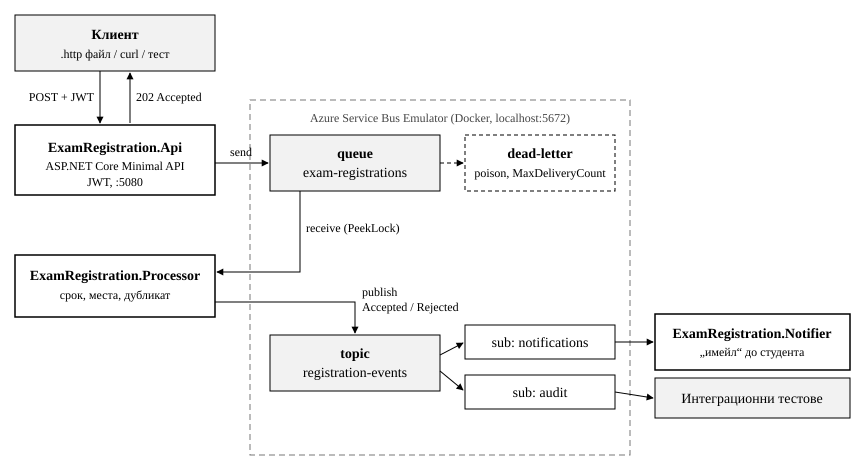

по дисциплината „Програмиране в разпределени среди“
на тема:
Messaging комуникация между микроуслуги с Azure Service Bus и проверка офлайн чрез Azure Service Bus Emulator
Система за записване за изпити (.NET 8, ASP.NET Core, Azure Service Bus, Docker)
Изготвил: Максим Ванчев Фак. №: 121223097 ФКСТ, КСИ, група 42
София, 2026
СЪДЪРЖАНИЕ
1. Задание
2. Теоретична основа
3. Архитектура на системата
4. Организиране на Local Development (A)
5. Response endpoint и HTTP тест (B)
6. Създаване и регистриране на опашка (C)
7. Логика за изпращане на съобщения (D)
8. Логика за получаване на съобщения (E)
9. Authentication и Authorization (F)
9.1. Автентикация към Service Bus
9.2. Автентикация на HTTP API
9.3. Политики за оторизация
10. Подкарване на Azure Service Bus Emulator (G)
11. Тест чрез Azure Service Bus Emulator (H)
11.1. Автоматизирани интеграционни тестове
11.2. Ръчна демонстрация
12. Изводи
13. Приложение: компилиране и стартиране
1. Задание
Темата на проекта е „Приложение на тема по избор“ (вариант 3.1). Изисква се messaging комуникация между няколко микроуслуги на
.NET чрез Azure Service Bus, като функционалността се проверява офлайн чрез Azure Service Bus Emulator. Целта е
да се покаже как се създават няколко микроуслуги, които работят заедно.
Избраната предметна област е записване на студенти за изпити в ТУ – София. Студентът подава заявка през HTTP API. Заявката
не се обработва синхронно. Тя се изпраща като съобщение в опашка. Отделна услуга я проверява по бизнес правила и публикува
резултата като събитие. Трета услуга е абонирана за събитията и уведомява студента.
Таблица 1. Изисквани дейности и тяхната реализация
№
Дейност
Реализация в проекта
A
Организиране на Local Development
solution с 4 проекта и 2 тестови проекта, конфигурация по среди, user-secrets, скрипт run-all.sh
B
Azure response endpoint и HTTP тест
Minimal API endpoint-и, файл .http, 7 автоматизирани HTTP теста
C
Създаване и регистриране на опашка
опашка, topic и абонаменти в Config.json; регистриране на клиентите в DI
D
Логика за изпращане на съобщения
ServiceBusRegistrationPublisher, публикуване на резултати в topic
E
Логика за получаване на съобщения
ServiceBusProcessor с PeekLock: Complete / Abandon / DeadLetter
F
Authentication и Authorization Options
SAS и Options validation за Service Bus; JWT Bearer и две политики за API
G
Подкарване на Azure Service Bus Emulator
docker-compose.yml с емулатор и SQL Server
H
Тест на/чрез емулатора
4 интеграционни теста и ръчна демонстрация
I
Описание на предните стъпки
настоящият документ
2. Теоретична основа
Message Oriented Middleware (MOM) е междинен софтуер, при който приложенията обменят съобщения през посредник (message
broker), вместо да се извикват директно. Изпращачът не чака получателя (fire-and-forget), а двете страни не знаят една за
друга (loose coupling). Ако получателят временно не работи, съобщенията го чакат в брокера.
Има два основни модела. При point-to-point (опашка, queue) всяко съобщение се обработва от точно един получател, обикновено
по реда на пристигане (FIFO). При publish-subscribe (topic) едно съобщение се доставя на всички абонати. Съобщение, което
не може да бъде обработено (poison message) или е изтекло, се премества в dead-letter опашка (DLQ), за да не блокира
останалите.
Azure Service Bus е облачен брокер на Microsoft, който работи по протокола AMQP 1.0. Предлага опашки, topic-и с абонаменти,
потвърждаване на обработката (PeekLock), откриване на дубликати, DLQ и сесии. Azure Service Bus Emulator е официален
Docker образ, който предоставя същия AMQP интерфейс локално. Така приложението се разработва и тества без Azure абонамент и
без интернет.
Микроуслугите са малки, независимо стартирани и разгръщани услуги, всяка със собствена отговорност. Принципът
„smart endpoints and dumb pipes“ означава, че бизнес логиката е в услугите, а комуникационната инфраструктура само пренася
съобщенията.
Таблица 2. Понятия от лекциите и къде се използват в проекта
Понятие
Използване в проекта
Loose coupling, fire-and-forget
Api не познава Processor и Notifier, само изпраща съобщение и връща 202 Accepted
Point-to-point (queue)
опашка exam-registrations
Publish-subscribe (topic)
topic registration-events с абонаменти notifications и audit
Acknowledgement
PeekLock и ръчно CompleteMessageAsync
Dead letter / poison message
невалидните съобщения отиват в DLQ; след MaxDeliveryCount = 3 неуспешни опита също
правилата за записване са в Processor, а брокерът само пренася
3. Архитектура на системата
Системата се състои от три микроуслуги и общ проект с договорите на съобщенията (фиг. 1). Услугите комуникират
единствено чрез Service Bus и не се извикват директно.

Фиг. 1. Архитектура и поток на съобщенията
Таблица 3. Компоненти на решението
Проект
Отговорност
ExamRegistration.Contracts
съобщения ExamRegistrationRequested и ExamRegistrationProcessed, имена на опашки и topic-и, ServiceBusOptions, каталог с изпити
ExamRegistration.Api
HTTP endpoint-и, валидация на входа, JWT, изпращане в опашката
ExamRegistration.Processor
получаване от опашката, бизнес правила, публикуване на резултата в topic
ExamRegistration.Notifier
абонат на topic-а, симулира имейл до студента
ExamRegistration.Api.Tests
HTTP тестове на API-то в паметта
ExamRegistration.IntegrationTests
end-to-end тестове срещу емулатора
Последователността при едно записване е следната:
Клиентът изпраща POST /api/registrations с JWT токен.
Api валидира данните, изпраща ExamRegistrationRequested в опашката и връща 202 Accepted.
Processor получава съобщението, проверява правилата и публикува ExamRegistrationProcessed (Accepted или Rejected) в topic-а.
Notifier получава събитието от абонамента notifications и „изпраща имейл“.
4. Организиране на Local Development (A)
Използвани инструменти: .NET SDK 8, Docker Desktop (macOS, Apple Silicon), Visual Studio Code / Rider. Решението е
създадено с командния ред на .NET (листинг 1).
Листинг 1. Създаване на решението
dotnet new sln -n ExamRegistration
dotnet new classlib -n ExamRegistration.Contracts -o src/ExamRegistration.Contracts
dotnet new web -n ExamRegistration.Api -o src/ExamRegistration.Api
dotnet new worker -n ExamRegistration.Processor -o src/ExamRegistration.Processor
dotnet new worker -n ExamRegistration.Notifier -o src/ExamRegistration.Notifier
dotnet new xunit -n ExamRegistration.Api.Tests -o tests/ExamRegistration.Api.Tests
dotnet new xunit -n ExamRegistration.IntegrationTests -o tests/ExamRegistration.IntegrationTests
dotnet sln add src/*/*.csproj tests/*/*.csproj
Използвани NuGet пакети: Azure.Messaging.ServiceBus (клиент), Microsoft.Extensions.Azure (интеграция с
dependency injection), Microsoft.AspNetCore.Authentication.JwtBearer, Microsoft.AspNetCore.Mvc.Testing и xUnit.
Конфигурацията е разделена по среди: appsettings.json съдържа общите настройки, а appsettings.Development.json
съдържа connection string към емулатора. Ключът за подписване на JWT се пази в user-secrets извън хранилището.
launchSettings.json фиксира адреса на API-то на http://localhost:5080. Скриптът run-all.sh стартира
емулатора, изчаква го да е готов и пуска трите услуги.
Интернет е нужен само веднъж, за изтегляне на Docker образите и NuGet пакетите. След това разработката и тестването
работят без мрежа.
5. Response endpoint и HTTP тест (B)
API-то е реализирано с ASP.NET Core Minimal API (таблица 4).
Таблица 4. HTTP endpoint-и
Метод
Път
Достъп
Отговор
GET
/api/health
анонимен
200, състояние на услугата
GET
/api/exams
анонимен
200, списък с изпити
POST
/api/registrations
CanRegister
202 + Location + registrationId; 400 при невалидни данни
GET
/api/registrations/{id}
CanRegister
200 или 404
GET
/api/registrations
CanViewAll
200, всички заявки
Записването връща 202 Accepted, а не 200 или 201, защото обработката е асинхронна. Заявката е приета и предадена на
опашката, а резултатът идва по-късно като събитие. Входните данни се проверяват в RegistrationRequest.Validate():
факултетен номер от 9 цифри, име, валиден имейл и съществуващ изпит. При грешка се връща ValidationProblem (листинг 2).
Листинг 2. Отговор при невалидни данни
HTTP/1.1 400 Bad Request
{"title":"One or more validation errors occurred.","status":400,
"errors":{"FacultyNumber":["Факултетният номер трябва да е 9 цифри."],
"StudentName":["Името е задължително."],
"StudentEmail":["Невалиден имейл адрес."],
"ExamId":["Няма изпит с такъв идентификатор."]}}
Ръчното тестване се прави с файла ExamRegistration.Api.http, който съдържа 7 заявки за всички сценарии. За
автоматизираното тестване проектът ExamRegistration.Api.Tests стартира API-то в паметта чрез
WebApplicationFactory<Program>. Service Bus е заменен с FakePublisher, така че се тества само HTTP
слоят. Всичките 7 теста преминават успешно.
6. Създаване и регистриране на опашка (C)
Емулаторът не поддържа създаване на ресурси през Azure портала. Опашките и topic-ите се описват декларативно във файла
emulator/Config.json и се създават при стартиране на емулатора (таблица 5).
Таблица 5. Ресурси в namespace sbemulatorns
Вид
Име
Настройки
Queue
exam-registrations
LockDuration = 30 s, MaxDeliveryCount = 3, откриване на дубликати в прозорец 5 min, DLQ при изтичане, TTL 1 h
Topic
registration-events
TTL 1 h
Subscription
notifications
за Notifier, MaxDeliveryCount = 3
Subscription
audit
за проверка на потока в тестовете
Имената са константи в Contracts/ServiceBusNames.cs, за да няма разминаване между услугите. В приложението
клиентите се регистрират в dependency injection контейнера (листинг 3). ServiceBusClient е singleton, защото държи
една AMQP връзка за целия процес. Именуваният ServiceBusSender се получава чрез IAzureClientFactory.
Листинг 3. Регистриране на клиента и sender-а за опашката (Api/Program.cs)
Изпращането е капсулирано в класа ServiceBusRegistrationPublisher зад интерфейса IRegistrationPublisher
(листинг 4). Интерфейсът позволява в HTTP тестовете да се използва fake реализация.
В режим PeekLock съобщението се заключва, но не се изтрива, докато услугата не го потвърди. Така нито една заявка не се
губи при срив. Начинът на завършване зависи от резултата (таблица 6).
Таблица 6. Завършване на обработката
Ситуация
Действие
Ефект
успешна обработка
CompleteMessageAsync
съобщението се изтрива от опашката
невалиден JSON (poison)
DeadLetterMessageAsync
веднага в DLQ с причина InvalidPayload
временна грешка
AbandonMessageAsync
връща се в опашката; след 3 опита отива в DLQ
Бизнес правилата са в класа RegistrationValidator. Той проверява дали изпитът съществува, дали срокът не е
изтекъл, дали има свободни места и дали студентът вече не е записан. NotificationWorker в Notifier използва
същия модел, но за абонамента registration-events/notifications, и за всяко събитие записва в лога симулиран имейл.
9. Authentication и Authorization (F)
Всички механизми работят офлайн, без Azure акаунт и без външен identity provider.
9.1. Автентикация към Service Bus
Услугите се свързват с брокера чрез Shared Access Signature (SAS) connection string (листинг 6). Параметърът
UseDevelopmentEmulator=true указва на SDK-то да се свърже с емулатора на localhost.
Стойността се чете от конфигурационната секция ServiceBus чрез Options pattern (листинг 7). Ако connection
string-ът липсва, услугата отказва да стартира. Той никога не е в C# кода. Ключът на емулатора е публична стойност, затова
е в appsettings.Development.json. За реална среда се подава чрез dotnet user-secrets или чрез
променлива на средата ServiceBus__ConnectionString.
Листинг 7. Валидиране на настройките при стартиране
API-то използва JWT Bearer автентикация (AddAuthentication().AddJwtBearer()). Издателят, аудиторията и ключът
за подписване се четат от секцията Authentication:Schemes:Bearer. Токените се генерират локално с инструмента
dotnet user-jwts, който е част от .NET SDK (листинг 8). Инструментът записва издателя и аудиторията в
appsettings.Development.json, а ключа за подписване в user-secrets.
порт 5672 (AMQP) и 5300 (health); монтиран Config.json
servicebus-sql
mcr.microsoft.com/mssql/server:2022-latest
linux/amd64, на Apple Silicon работи през Rosetta
Файлът .env съдържа ACCEPT_EULA=Y, паролата на SQL Server и времето за изчакване на базата. Стартирането
и проверката са показани в листинг 10.
Листинг 10. Стартиране на емулатора
cd emulator
docker compose up -d
docker logs servicebus-emulator
Emulator Service is Launching On Platform:CBL-Mariner/Linux,Arm64
Emulator Service is Successfully Up! ; Use connection string: "Endpoint=sb://localhost;..."
Емулаторът се спира с docker compose down.
11. Тест чрез Azure Service Bus Emulator (H)
11.1. Автоматизирани интеграционни тестове
Проектът ExamRegistration.IntegrationTests работи срещу реалния емулатор, без заместване на Service Bus. Класът
EmulatorFixture стартира RegistrationProcessorWorker в процеса на теста и чете резултатите от абонамента
audit (таблица 9). Всичките 4 теста преминават успешно.
Таблица 9. Интеграционни тестове
Тест
Какво проверява
ApiPost_FlowsThroughQueueAndTopic_Accepted
HTTP POST с JWT → опашка → Processor → topic → audit със статус Accepted
ExpiredDeadline_IsRejected
изпит с изтекъл срок → Rejected
DuplicateStudent_SecondRegistrationIsRejected
втора заявка на същия студент → Rejected
PoisonMessage_GoesToDeadLetterQueue
невалидно тяло → съобщението е в DLQ с причина InvalidPayload
11.2. Ръчна демонстрация
Системата се стартира с ./run-all.sh. От файла .http се изпращат заявки: един студент два пъти за
изпита PRS-2026-01, един студент за изпит с изтекъл срок и трима студенти за изпит OOP-2026-01 с капацитет 2. Резултатът в
логовете на услугите е показан в листинг 11.
Листинг 11. Логове на услугите при демонстрацията
[Api] Sent registration 6dec741f-... for exam PRS-2026-01 to queue exam-registrations
[Processor] Registration 6dec741f-... (121221001 -> PRS-2026-01): Accepted
[Processor] Registration 614182cf-... (121221001 -> PRS-2026-01): Rejected Студентът вече е записан за този изпит.
[Processor] Registration dc5962cc-... (121221002 -> MATH-2025-09): Rejected Срокът за записване изтече на 01.09.2025.
[Notifier] EMAIL to ivan@tu-sofia.bg | Успешно сте записан(а) за изпит PRS-2026-01.
[Notifier] EMAIL to a@tu-sofia.bg | Успешно сте записан(а) за изпит OOP-2026-01.
[Notifier] EMAIL to b@tu-sofia.bg | Успешно сте записан(а) за изпит OOP-2026-01.
[Notifier] EMAIL to c@tu-sofia.bg | Записването за изпит OOP-2026-01 е отказано: Няма свободни места (капацитет 2).
Слабата свързаност е проверена със следния опит. Notifier се спира, изпращат се заявки и после Notifier се стартира отново.
Съобщенията са чакали в абонамента notifications и се обработват веднага след стартирането. Нито едно не се губи.
12. Изводи
Реализирана е система от три микроуслуги, които комуникират само чрез Azure Service Bus. Използвани са двата основни модела
на MOM: опашка за заявките и topic с абонаменти за резултатите. Приложени са механизмите за надеждна доставка: потвърждаване
в режим PeekLock, повторни опити, dead-letter опашка и откриване на дубликати.
Azure Service Bus Emulator позволява цялата система да се разработи и тества офлайн, включително с автоматизирани
интеграционни тестове. Преминаването към реален Azure Service Bus изисква само смяна на connection string-а, без промяна на кода.
Възможни разширения: Managed Identity и RBAC вместо SAS при реален Azure; база данни вместо състояние в паметта; сесии
(RequiresSession) за подредба на съобщенията по студент; API Gateway пред услугите.
13. Приложение: компилиране и стартиране
Изисквания: .NET SDK 8 и Docker Desktop. Командите са дадени в листинг 12.
Листинг 12. Стартиране и тестване
# емулатор + трите услуги
./run-all.sh
# HTTP тестове (без емулатор)
dotnet test tests/ExamRegistration.Api.Tests
# интеграционни тестове (с работещ емулатор)
cd emulator && docker compose up -d && cd ..
dotnet test tests/ExamRegistration.IntegrationTests
# PDF на документацията
./scripts/build-docs.sh